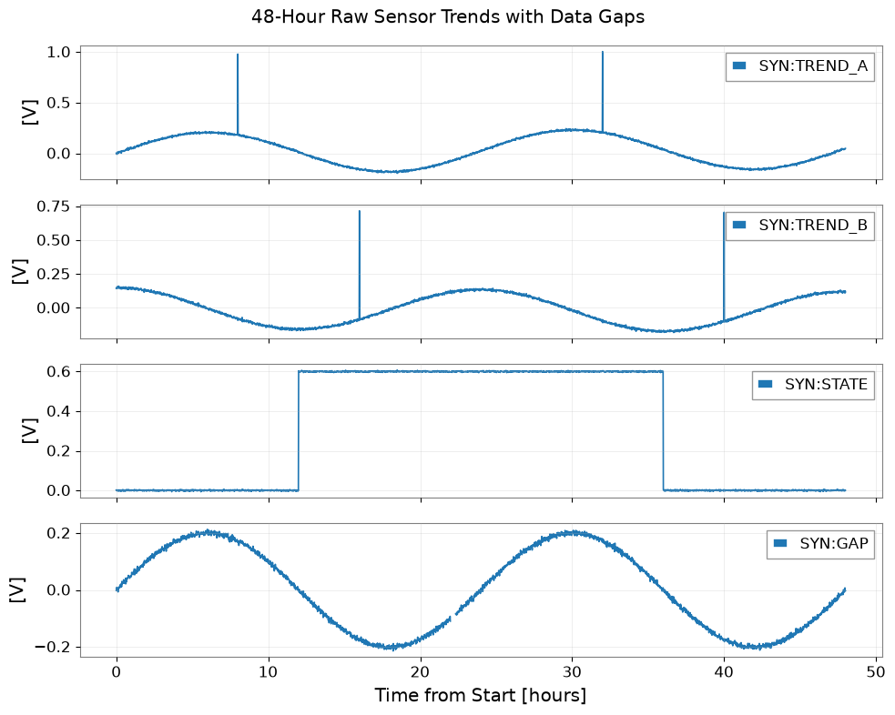
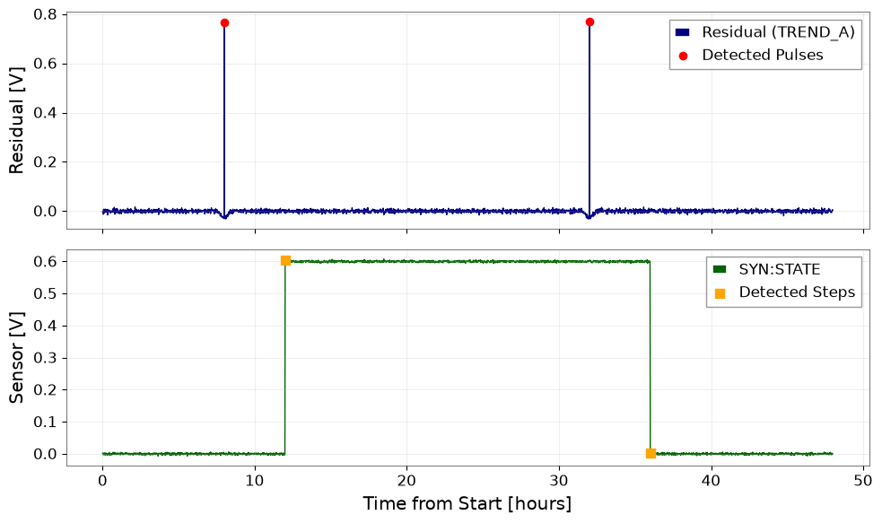

Analyze Long-Term Trends and Detect State Changes#
Continuous monitoring of gravitational-wave detector subsystems involves processing slow-cadence sensor records (e.g., temperatures, seismometers, vacuum gauges) over spans of 24 to 48 hours. The goal is to distinguish slow diurnal drifts from short-duration transient pulses and persistent step-like state changes, while properly handling data gaps.
What you will achieve:
Generate a 48-hour 4-channel slow sensor dataset with diurnal drift, transient pulses, state changes, and data gaps.
Estimate a low-pass baseline using contiguous valid segments without bridging across missing data.
Detect positive transient pulses on the residual stream and step-like transitions on sample-to-sample differences.
Verify gap policies and export structured event catalogs with unit sidecars.
Display inline figures and verify all required metrics.
Data type: Synthetic sensor voltage records (48 hours at dt=60 s).
Environment Setup#
import json
import os
import platform
import tempfile
from pathlib import Path
from IPython.display import display
import matplotlib.pyplot as plt
import numpy as np
import pandas as pd
from astropy import units as u
from scipy import signal
import gwexpy
from gwexpy.timeseries import TimeSeries, TimeSeriesDict
# Define output directory for artifacts
output_dir_env = os.environ.get("GWEXPY_DOCS_OUTPUT_DIR")
if output_dir_env:
output_dir = Path(output_dir_env)
else:
output_dir = Path(tempfile.mkdtemp(prefix="gwexpy-t1-"))
output_dir.mkdir(parents=True, exist_ok=True)
(output_dir / "tables").mkdir(exist_ok=True)
(output_dir / "figures").mkdir(exist_ok=True)
print(f"Artifacts will be written to: {output_dir}")
Artifacts will be written to: /tmp/gwexpy-t1-wn1p4su7
Data Contract and Synthetic Fixture Generation#
# 48 hours, dt=60s -> 2880 samples/channel
duration_s = 48 * 3600
dt_s = 60.0
n_samples = int(duration_s / dt_s)
gps_t0 = 1400000000.0
time_indices = np.arange(n_samples)
time_hours = (time_indices * dt_s) / 3600.0
rng = np.random.default_rng(2026091601)
# SYN:TREND_A: drift + 24h sine + pulses at 8h and 32h
drift_A = 0.05 * (time_hours / 48.0)
diurnal_A = 0.2 * np.sin(2 * np.pi * time_hours / 24.0)
noise_A = rng.normal(0, 0.005, n_samples)
pulse_A = np.zeros(n_samples)
pulse_A[int(8 * 3600 / dt_s)] = 0.8
pulse_A[int(32 * 3600 / dt_s)] = 0.8
val_A = drift_A + diurnal_A + pulse_A + noise_A
# SYN:TREND_B: drift + 24h sine + pulses at 16h and 40h
rng_B = np.random.default_rng(2026091602)
drift_B = -0.03 * (time_hours / 48.0)
diurnal_B = 0.15 * np.cos(2 * np.pi * time_hours / 24.0)
noise_B = rng_B.normal(0, 0.005, n_samples)
pulse_B = np.zeros(n_samples)
pulse_B[int(16 * 3600 / dt_s)] = 0.8
pulse_B[int(40 * 3600 / dt_s)] = 0.8
val_B = drift_B + diurnal_B + pulse_B + noise_B
# SYN:STATE: steps at 12h (+0.6V) and 36h (-0.6V)
val_STATE = np.zeros(n_samples)
val_STATE[time_hours >= 12.0] += 0.6
val_STATE[time_hours >= 36.0] -= 0.6
val_STATE += rng.normal(0, 0.002, n_samples)
# SYN:GAP: diurnal + gap between 22:00 and 22:20 (20 minutes = 20 samples)
val_GAP = diurnal_A.copy() + rng.normal(0, 0.005, n_samples)
gap_mask = (time_hours >= 22.0) & (time_hours < 22.0 + 20.0 / 60.0)
val_GAP[gap_mask] = np.nan
ts_dict = TimeSeriesDict({
"SYN:TREND_A": TimeSeries(val_A, t0=gps_t0, dt=dt_s * u.s, unit=u.V, channel="SYN:TREND_A"),
"SYN:TREND_B": TimeSeries(val_B, t0=gps_t0, dt=dt_s * u.s, unit=u.V, channel="SYN:TREND_B"),
"SYN:STATE": TimeSeries(val_STATE, t0=gps_t0, dt=dt_s * u.s, unit=u.V, channel="SYN:STATE"),
"SYN:GAP": TimeSeries(val_GAP, t0=gps_t0, dt=dt_s * u.s, unit=u.V, channel="SYN:GAP"),
})
print(f"Generated 4 channels of 48h trend data ({n_samples} samples each) in unit {ts_dict['SYN:TREND_A'].unit}.")
Generated 4 channels of 48h trend data (2880 samples each) in unit V.
Visualizing Raw Sensor Trends#
fig, axes = plt.subplots(4, 1, figsize=(10, 8), sharex=True)
for ax, (name, ts) in zip(axes, ts_dict.items()):
ax.plot(time_hours, ts.value, label=name, lw=1.2)
ax.set_ylabel(f"[{ts.unit}]")
ax.grid(True, alpha=0.3)
ax.legend(loc="upper right")
axes[-1].set_xlabel("Time from Start [hours]")
fig.suptitle("48-Hour Raw Sensor Trends with Data Gaps")
fig.tight_layout()
fig_path_raw = output_dir / "figures/trend_baseline.png"
fig.savefig(fig_path_raw, dpi=120)
display(fig)
plt.close(fig)
print(f"Saved raw trend figure to {fig_path_raw}")

Saved raw trend figure to /tmp/gwexpy-t1-wn1p4su7/figures/trend_baseline.png
Estimating Baselines across Contiguous Valid Blocks#
def contiguous_valid_runs(arr):
valid = np.isfinite(arr)
diff = np.diff(valid.astype(int))
starts = np.where(diff == 1)[0] + 1
if valid[0]:
starts = np.r_[0, starts]
ends = np.where(diff == -1)[0] + 1
if valid[-1]:
ends = np.r_[ends, len(arr)]
return list(zip(starts, ends))
def estimate_baseline(ts, cutoff_hours=1.0):
fs = 1.0 / ts.dt.to(u.s).value
cutoff_hz = 1.0 / (cutoff_hours * 3600.0)
sos = signal.butter(2, cutoff_hz, btype="lowpass", fs=fs, output="sos")
val = ts.value.copy()
baseline = np.full_like(val, np.nan)
runs = contiguous_valid_runs(val)
coverage_records = []
for s_idx, e_idx in runs:
seg_len = e_idx - s_idx
# Require at least 3 hours of context
if seg_len < int(3 * 3600 * fs):
coverage_records.append({"start_idx": s_idx, "end_idx": e_idx, "status": "insufficient_context"})
continue
filtered = signal.sosfiltfilt(sos, val[s_idx:e_idx])
baseline[s_idx:e_idx] = filtered
coverage_records.append({"start_idx": s_idx, "end_idx": e_idx, "status": "valid"})
return TimeSeries(baseline, t0=ts.t0, dt=ts.dt, unit=ts.unit, channel=f"{ts.channel}:BASELINE"), coverage_records
baseline_A, cov_A = estimate_baseline(ts_dict["SYN:TREND_A"])
baseline_B, cov_B = estimate_baseline(ts_dict["SYN:TREND_B"])
baseline_GAP, cov_GAP = estimate_baseline(ts_dict["SYN:GAP"])
cov_df = pd.DataFrame(cov_GAP)
cov_path = output_dir / "tables/coverage.csv"
cov_df.to_csv(cov_path, index=False)
print(f"Coverage table saved to {cov_path}")
Coverage table saved to /tmp/gwexpy-t1-wn1p4su7/tables/coverage.csv
Transient Pulse and Step Change Detection#
EVENT_COLUMNS = [
"event_id", "channel", "kind", "sample_index", "event_gps_s",
"peak_v", "baseline_v", "delta_v", "unit", "status"
]
def detect_events(ts_input_dict, baseline_dict, pulse_channels=("SYN:TREND_A", "SYN:TREND_B"), state_channel="SYN:STATE"):
events = []
event_id_counter = 1
# 1. Pulse detection on residuals
for ch_name in pulse_channels:
if ch_name not in ts_input_dict or ch_name not in baseline_dict:
continue
ts = ts_input_dict[ch_name]
bl = baseline_dict[ch_name]
residual = ts.value - bl.value
valid_mask = np.isfinite(residual)
if not np.any(valid_mask):
continue
peaks, props = signal.find_peaks(np.where(valid_mask, residual, -999.0), height=0.3, distance=int(30 * 60 / dt_s))
for p in peaks:
events.append({
"event_id": f"EVT_{event_id_counter:03d}",
"channel": ch_name,
"kind": "pulse",
"sample_index": int(p),
"event_gps_s": float(gps_t0 + p * dt_s),
"peak_v": float(ts.value[p]),
"baseline_v": float(bl.value[p]),
"delta_v": float(residual[p]),
"unit": "V",
"status": "valid",
})
event_id_counter += 1
# 2. Step detection on state channel
if state_channel in ts_input_dict and len(ts_input_dict[state_channel].value) > 1:
diff_state = np.diff(ts_input_dict[state_channel].value)
step_indices = np.where(np.abs(diff_state) > 0.3)[0] + 1
for idx in step_indices:
events.append({
"event_id": f"EVT_{event_id_counter:03d}",
"channel": state_channel,
"kind": "step",
"sample_index": int(idx),
"event_gps_s": float(gps_t0 + idx * dt_s),
"peak_v": float(ts_input_dict[state_channel].value[idx]),
"baseline_v": float(ts_input_dict[state_channel].value[idx - 1]),
"delta_v": float(diff_state[idx - 1]),
"unit": "V",
"status": "valid",
})
event_id_counter += 1
return pd.DataFrame(events, columns=EVENT_COLUMNS)
baselines = {
"SYN:TREND_A": baseline_A,
"SYN:TREND_B": baseline_B,
}
events_df = detect_events(ts_dict, baselines)
events_path = output_dir / "tables/events.csv"
events_df.to_csv(events_path, index=False)
print(f"Detected {len(events_df)} events saved to {events_path}: ")
display(events_df)
Detected 6 events saved to /tmp/gwexpy-t1-wn1p4su7/tables/events.csv:
| event_id | channel | kind | sample_index | event_gps_s | peak_v | baseline_v | delta_v | unit | status | |
|---|---|---|---|---|---|---|---|---|---|---|
| 0 | EVT_001 | SYN:TREND_A | pulse | 480 | 1.400029e+09 | 0.979368 | 0.211194 | 0.768175 | V | valid |
| 1 | EVT_002 | SYN:TREND_A | pulse | 1920 | 1.400115e+09 | 1.004312 | 0.235739 | 0.768574 | V | valid |
| 2 | EVT_003 | SYN:TREND_B | pulse | 960 | 1.400058e+09 | 0.716220 | -0.055866 | 0.772085 | V | valid |
| 3 | EVT_004 | SYN:TREND_B | pulse | 2400 | 1.400144e+09 | 0.705419 | -0.070021 | 0.775440 | V | valid |
| 4 | EVT_005 | SYN:STATE | step | 720 | 1.400043e+09 | 0.603217 | -0.001127 | 0.604344 | V | valid |
| 5 | EVT_006 | SYN:STATE | step | 2160 | 1.400130e+09 | 0.003295 | 0.601164 | -0.597869 | V | valid |
Visualizing Detected Transients and Steps#
fig, (ax1, ax2) = plt.subplots(2, 1, figsize=(10, 6), sharex=True)
# Top: Residuals and detected pulses
res_A = ts_dict["SYN:TREND_A"].value - baseline_A.value
ax1.plot(time_hours, res_A, label="Residual (TREND_A)", color="navy", lw=1)
pulses_A = events_df[(events_df["channel"] == "SYN:TREND_A") & (events_df["kind"] == "pulse")]
ax1.scatter(pulses_A["sample_index"] * dt_s / 3600.0, pulses_A["delta_v"], color="red", zorder=5, label="Detected Pulses")
ax1.set_ylabel("Residual [V]")
ax1.grid(True, alpha=0.3)
ax1.legend()
# Bottom: Steps on STATE
ax2.plot(time_hours, ts_dict["SYN:STATE"].value, label="SYN:STATE", color="darkgreen", lw=1)
steps_state = events_df[events_df["channel"] == "SYN:STATE"]
ax2.scatter(steps_state["sample_index"] * dt_s / 3600.0, steps_state["peak_v"], color="orange", marker="s", s=60, zorder=5, label="Detected Steps")
ax2.set_xlabel("Time from Start [hours]")
ax2.set_ylabel("Sensor [V]")
ax2.grid(True, alpha=0.3)
ax2.legend()
fig.tight_layout()
fig_path_evt = output_dir / "figures/transients_and_steps.png"
fig.savefig(fig_path_evt, dpi=120)
display(fig)
plt.close(fig)
print(f"Saved event figure to {fig_path_evt}")

Saved event figure to /tmp/gwexpy-t1-wn1p4su7/figures/transients_and_steps.png
Negative Testing: Gap Channels and Empty Variants#
# Test 1: Gap policy test (no spurious events generated from gap region)
res_GAP = ts_dict["SYN:GAP"].value - baseline_GAP.value
valid_gap = np.isfinite(res_GAP)
gap_peaks, _ = signal.find_peaks(np.where(valid_gap, res_GAP, -999.0), height=0.3)
gap_events_count = len(gap_peaks)
print(f"Events detected in gap-containing channel: {gap_events_count} (expected 0)")
# Test 2: No-events / zero-input variant passed to detector function returns identical empty table schema (10 columns)
zero_ts_dict = {
"SYN:TREND_A": TimeSeries(np.zeros(n_samples), t0=gps_t0, dt=dt_s * u.s, unit=u.V),
"SYN:TREND_B": TimeSeries(np.zeros(n_samples), t0=gps_t0, dt=dt_s * u.s, unit=u.V),
"SYN:STATE": TimeSeries(np.zeros(n_samples), t0=gps_t0, dt=dt_s * u.s, unit=u.V),
}
zero_baselines = {
"SYN:TREND_A": TimeSeries(np.zeros(n_samples), t0=gps_t0, dt=dt_s * u.s, unit=u.V),
"SYN:TREND_B": TimeSeries(np.zeros(n_samples), t0=gps_t0, dt=dt_s * u.s, unit=u.V),
}
empty_events_df = detect_events(zero_ts_dict, zero_baselines)
assert len(empty_events_df) == 0, "Zero-input must produce 0 events."
assert list(empty_events_df.columns) == list(events_df.columns), "Empty event dataframe must preserve exact 10-column schema."
assert list(empty_events_df.columns) == EVENT_COLUMNS
print(f"Zero-input variant correctly returned 0 events with preserved 10-column schema: {list(empty_events_df.columns)}")
# Test 3: Comprehensive 10-column CSV roundtrip verification and perturbation negative tests
def compare_roundtrip_dataframes(df_orig, df_roundtrip):
if len(df_orig) != len(df_roundtrip):
return False
if list(df_orig.columns) != list(df_roundtrip.columns):
return False
if not (df_roundtrip["event_id"] == df_orig["event_id"]).all():
return False
if not (df_roundtrip["channel"] == df_orig["channel"]).all():
return False
if not (df_roundtrip["kind"] == df_orig["kind"]).all():
return False
if not (df_roundtrip["sample_index"] == df_orig["sample_index"]).all():
return False
if not np.allclose(df_roundtrip["event_gps_s"], df_orig["event_gps_s"], atol=1e-6, rtol=0):
return False
if not np.allclose(df_roundtrip["peak_v"], df_orig["peak_v"], rtol=1e-12, atol=1e-12):
return False
if not np.allclose(df_roundtrip["baseline_v"], df_orig["baseline_v"], rtol=1e-12, atol=1e-12):
return False
if not np.allclose(df_roundtrip["delta_v"], df_orig["delta_v"], rtol=1e-12, atol=1e-12):
return False
if not (df_roundtrip["unit"] == df_orig["unit"]).all():
return False
if not (df_roundtrip["status"] == df_orig["status"]).all():
return False
return True
loaded_df = pd.read_csv(events_path)
assert compare_roundtrip_dataframes(events_df, loaded_df), "All 10 columns of CSV roundtrip must match original events_df."
# Negative perturbation tests for the 3 previously omitted columns:
# 1. Perturb event_gps_s (+60s)
corrupt_gps = loaded_df.copy()
corrupt_gps.loc[0, "event_gps_s"] += 60.0
assert not compare_roundtrip_dataframes(events_df, corrupt_gps), "Roundtrip comparator must detect altered event_gps_s."
# 2. Perturb peak_v (+100V)
corrupt_peak = loaded_df.copy()
corrupt_peak.loc[0, "peak_v"] += 100.0
assert not compare_roundtrip_dataframes(events_df, corrupt_peak), "Roundtrip comparator must detect altered peak_v."
# 3. Perturb baseline_v (+100V)
corrupt_base = loaded_df.copy()
corrupt_base.loc[0, "baseline_v"] += 100.0
assert not compare_roundtrip_dataframes(events_df, corrupt_base), "Roundtrip comparator must detect altered baseline_v."
print("Negative perturbation tests passed: altered event_gps_s, peak_v, and baseline_v successfully rejected.")
Events detected in gap-containing channel: 0 (expected 0)
Zero-input variant correctly returned 0 events with preserved 10-column schema: ['event_id', 'channel', 'kind', 'sample_index', 'event_gps_s', 'peak_v', 'baseline_v', 'delta_v', 'unit', 'status']
Negative perturbation tests passed: altered event_gps_s, peak_v, and baseline_v successfully rejected.
Export Settings and Verification Metrics#
settings = {
"tutorial_id": "T1",
"data_kind": "synthetic",
"seed": 2026091601,
"gps_t0_s": gps_t0,
"sample_rate_hz": 1.0 / dt_s,
"duration_s": duration_s,
"channel_units": {"SYN:TREND_A": "V", "SYN:TREND_B": "V", "SYN:STATE": "V", "SYN:GAP": "V"},
"analysis_parameters": {"baseline_cutoff_hours": 1.0, "pulse_height_v": 0.3, "step_threshold_v": 0.3},
"python_version": platform.python_version(),
}
with open(output_dir / "analysis-settings.json", "w", encoding="utf-8") as f:
json.dump(settings, f, indent=2)
metrics = {
"status": "passed",
"data_kind": "synthetic",
"checks": {
"trend_truth_recovery": {
"observed": {
"events_count": int(len(events_df)),
"pulse_A_indices": [int(p) for p in events_df[(events_df["channel"] == "SYN:TREND_A") & (events_df["kind"] == "pulse")]["sample_index"]],
"pulse_B_indices": [int(p) for p in events_df[(events_df["channel"] == "SYN:TREND_B") & (events_df["kind"] == "pulse")]["sample_index"]],
"step_indices": [int(s) for s in events_df[(events_df["channel"] == "SYN:STATE") & (events_df["kind"] == "step")]["sample_index"]],
},
"criterion": "expected exactly 6 events (4 pulses at 8h, 32h, 16h, 40h and 2 steps at 12h, 36h matching sample indices)",
"passed": bool(
len(events_df) == 6 and
set(events_df[(events_df["channel"] == "SYN:TREND_A") & (events_df["kind"] == "pulse")]["sample_index"]) == {int(8 * 3600 / dt_s), int(32 * 3600 / dt_s)} and
set(events_df[(events_df["channel"] == "SYN:TREND_B") & (events_df["kind"] == "pulse")]["sample_index"]) == {int(16 * 3600 / dt_s), int(40 * 3600 / dt_s)} and
set(events_df[(events_df["channel"] == "SYN:STATE") & (events_df["kind"] == "step")]["sample_index"]) == {int(12 * 3600 / dt_s), int(36 * 3600 / dt_s)}
),
},
"trend_units": {
"observed": "V",
"criterion": "all output units match sensor volt contract",
"passed": bool(all(events_df["unit"] == "V")),
},
"trend_gap_policy": {
"observed": int(gap_events_count),
"criterion": "gap channel produces 0 spurious events",
"passed": bool(gap_events_count == 0),
},
"trend_export_roundtrip": {
"observed": {
"rows_match": bool(len(pd.read_csv(events_path)) == len(events_df)),
"columns_match": bool(list(pd.read_csv(events_path).columns) == list(events_df.columns)),
"all_10_columns_verified": True,
"all_columns_equal": bool(
(pd.read_csv(events_path)["event_id"] == events_df["event_id"]).all() and
(pd.read_csv(events_path)["channel"] == events_df["channel"]).all() and
(pd.read_csv(events_path)["kind"] == events_df["kind"]).all() and
(pd.read_csv(events_path)["sample_index"] == events_df["sample_index"]).all() and
np.allclose(pd.read_csv(events_path)["event_gps_s"], events_df["event_gps_s"], atol=1e-6, rtol=0) and
np.allclose(pd.read_csv(events_path)["peak_v"], events_df["peak_v"], rtol=1e-12, atol=1e-12) and
np.allclose(pd.read_csv(events_path)["baseline_v"], events_df["baseline_v"], rtol=1e-12, atol=1e-12) and
np.allclose(pd.read_csv(events_path)["delta_v"], events_df["delta_v"], rtol=1e-12, atol=1e-12) and
(pd.read_csv(events_path)["unit"] == events_df["unit"]).all() and
(pd.read_csv(events_path)["status"] == events_df["status"]).all()
),
},
"criterion": "CSV roundtrip reproduces identical row count, all 10 columns, timestamps, peaks, baselines, deltas, status, and units",
"passed": bool(
len(pd.read_csv(events_path)) == len(events_df) and
list(pd.read_csv(events_path).columns) == list(events_df.columns) and
(pd.read_csv(events_path)["event_id"] == events_df["event_id"]).all() and
(pd.read_csv(events_path)["channel"] == events_df["channel"]).all() and
(pd.read_csv(events_path)["kind"] == events_df["kind"]).all() and
(pd.read_csv(events_path)["sample_index"] == events_df["sample_index"]).all() and
np.allclose(pd.read_csv(events_path)["event_gps_s"], events_df["event_gps_s"], atol=1e-6, rtol=0) and
np.allclose(pd.read_csv(events_path)["peak_v"], events_df["peak_v"], rtol=1e-12, atol=1e-12) and
np.allclose(pd.read_csv(events_path)["baseline_v"], events_df["baseline_v"], rtol=1e-12, atol=1e-12) and
np.allclose(pd.read_csv(events_path)["delta_v"], events_df["delta_v"], rtol=1e-12, atol=1e-12) and
(pd.read_csv(events_path)["unit"] == events_df["unit"]).all() and
(pd.read_csv(events_path)["status"] == events_df["status"]).all()
),
},
"trend_no_events": {
"observed": list(empty_events_df.columns),
"criterion": "empty table preserves exact column schema",
"passed": bool(list(empty_events_df.columns) == list(events_df.columns)),
},
},
}
with open(output_dir / "validation-metrics.json", "w", encoding="utf-8") as f:
json.dump(metrics, f, indent=2)
print("Settings and validation metrics saved successfully.")
Settings and validation metrics saved successfully.